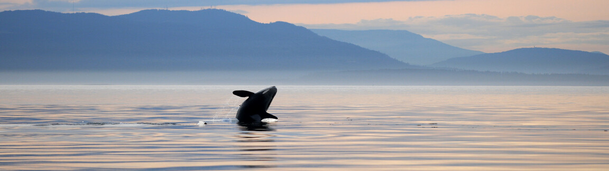

Electronic Waste in Oceans
Photo Credit: How You Can Help via Ocean Ecoventures
An article about the impacts of electronic waste on aquatic environments by Huang et al., published in Reviews of Environmental Contamination and Toxicology in 2014.
Abstract: The volume of e-waste is growing around the world, and, increasingly, it is being disposed of by export from developed to developing countries. This is the situation in Ghana, and, in this paper we address the potential consequences of such e-waste disposal. Herein, we describe how e-waste is processed in Ghana, and what the fate is of e-waste-chemical contaminants during recycling and storage. Finally, to the extent it is known, we address the prospective adverse effects of e-waste-related contaminants on health and aquatic life downstream from a large e-waste disposal facility in Accra, Ghana.In developing countries, including Ghana, e-waste is routinely disassembled by unprotected workers that utilize rudimentary methods and tools. Once disassembled,e-waste components are often stored in large piles outdoors. These processing and storage methods expose workers and local residents to several heavy metals and organic chemicals that exist in e-waste components. The amount of e-waste dumped in Ghana is increasing annually by about 20,000 t. The local aquatic environment is at a potential high risk, because the piles of e-waste components stored outside are routinely drenched or flooded by rainfall, producing run-off from storage sites to local waterways. Both water and sediment samples show that e-waste-related contaminant shave entered Ghana's water ways.The extent of pollution produced in key water bodies of Ghana (Odaw River and the Korle Lagoon) underscores the need for aquatic risk assessments of the many contaminants released during e-waste processing. Notwithstanding the fact that pollutants from other sources reach the water bodies, it is clear that these water bodies are also heavily impacted by contaminants that are found in e-waste. Our concern is that such exposures have limited and will continue to limit the diversity of aquatic organisms.There have also been changes in the abundance and biomass of surviving species and changes in food chains. Therefore, the need for actions to be taken to reduce entry of e-waste pollutants into Ghana's aquatic environment is real and is immediate.Heavy metals (e.g., lead, cadmium, copper and zinc) and organic pollutants (e.g.,PCDD/Fs and PBDEs) have been detected in the sediments of local water bodies in quantities that greatly exceed background levels. This fact alone suggests that aquatic organisms that live in the affected water bodies are highly exposed to these toxic, bio-accumulative, and persistent contaminants. These contaminants have been confirmed to result from the primitive methods used to recycle and process e-waste within the local environment.Only limited local data exist on the threats posed by these e-waste-related contaminants on nearby natural resources, especially aquatic organisms. In this review,we have addressed the potential toxicity of selected heavy metals and organic pollutants on aquatic organisms. Since there are no data on concentrations of contaminants in the water column, we have based our predictions of effects on pollutant release rates from sediments. Pollutants that are attached to sediments are routinely released into the water column from diffusion and advection, the rate of which depends on pH and Eh of the sediments. E-waste contaminants have the potential to produce deleterious effects on the behavior, physiology, metabolism, reproduction,development and growth of many aquatic organisms. Because it is confirmed that both heavy metal and organic contaminants are reaching the biota of Ghana's local waterways, we presume that they are producing adverse effects. Because local data on the aquatic toxicity of these contaminants are as yet unavailable, we strongly recommend that future research be undertaken to examine, on a large scale and long-term basis, both contamination levels in biota, and adverse effects on biota of the nearby water bodies.
Citation: Huang J, Nkrumah PN, Anim DO, Mensah E. E-waste disposal effects on the aquatic environment: Accra, Ghana. Rev Environ Contam Toxicol. 2014;229:19-34. doi: 10.1007/978-3-319-03777-6_2. PMID: 24515808.